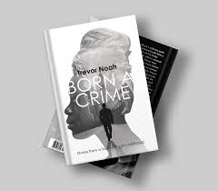
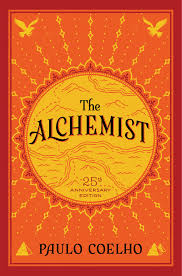
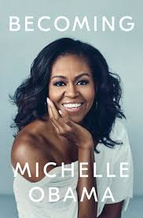

"In my world , a woman is the most powerful thing i knew, still is"

Title:Born A Crime
Author:Trevor Noah
Genres:Humor,Biography,Autography
THE IRON LADY
While reading 'Born A Crime' one can not overlook Patricia's character,i would change the title from that to be 'The Iron Lady'.This beacuse of Patricia character stood out for me.As much as i enjoyed Trevor's character too, he is who he is because of Patricia his mother.I would describe Patricia as resilience,independent,devoted mother,pragmatic,religious,rebellious and among all, she was a hero.She went through hardships but managed to raise her three children .She managed to defied the apartheid laws and raised Trevor.Through it all she was always humorous
Today's Society
“Abel wanted a traditional wife…but he never fell in love with subservient women…”He only wants a woman who is free because his dream is to put her in a cage".Abel uses the norms and beliefs of his community to try and make Patricia live according to how women in his community behave. This didn't just happen during that time when Trevor wrote the book but it is still happening today, from the day we are born our gender is influenced to partake in certain gender roles depending on our sex.Our gender consist of whatever behaviours and attitudes a group considers proper for its males and females.Males are expected to take more aggressive roles to show power and dominance whereas females are expected to partake on more nurturing and subservient roles.In our community ,women should be women and men should men.The females are expected to practise their roles right from birth.However,if one fails to do so,they are labeled as”not masculine/feminist enough.For example boys should not go to the kitchen,it's the girl/woman's duty to cook the food ,serve it and even take it the "men " regardless of the age.A boy becomes a man as early as possible and he has the right to imposed rules on girls around him and the girls are expected to be submissive.Most of them claim that “A girl should be trained so that she can go and manage her husband's home without bringing bad reputation to the family's name”The responsibility of making rules on girls is handed over to one's husband as soon as you are married.It is like we are trapped our entire life.Apparently the men have to make the decisions on behalf of everyone and a women have no saying in it as the community demand us to do so.May picks

